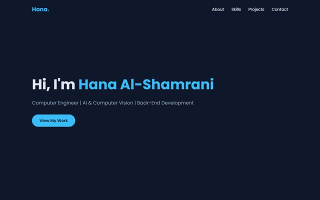
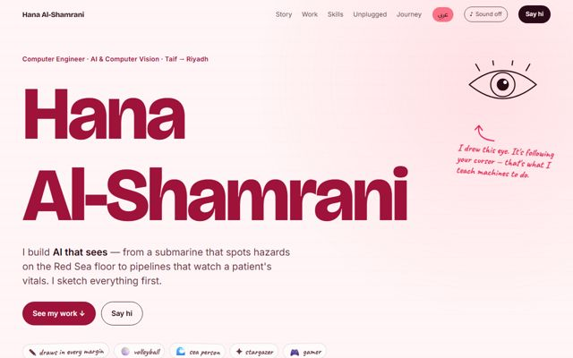

Welcome · أهلاً
Experience the power
of a strong prompt.
Same person. Same projects. Two prompts. Pick one.
نفس الشخص، نفس المشاريع، أمران مختلفان. اختر تجربتك.

Weak prompt أمر ضعيف
“Build me a personal website that looks modern and includes information about me.”
- one generic page
- projects as one-liners, no links
- English only

Strong prompt أمر قوي
“Act as a portfolio designer. Ask me first. Build it around who I am — my projects, my sea, my stars, my games. Don't invent numbers.”
- 8 projects, each a world you can play with
- English + Arabic, mobile-tested
- her own identity and hobbies
what changed between A and B
A · weakB · strong
Graduation projecta one-line cardthe centerpiece — 1st place, newspaper, live YOLO toy
Projects5 one-liners, no links8 worlds with role, result, links and a toy each
Personalitynonedrawing, volleyball, the sea, stars, games, One Piece
LanguageEnglish onlyEnglish + Arabic (right-to-left)
Mobilenav overflowstested at phone width in both languages
Honesty—no invented numbers, real links, illustrative demos labelled